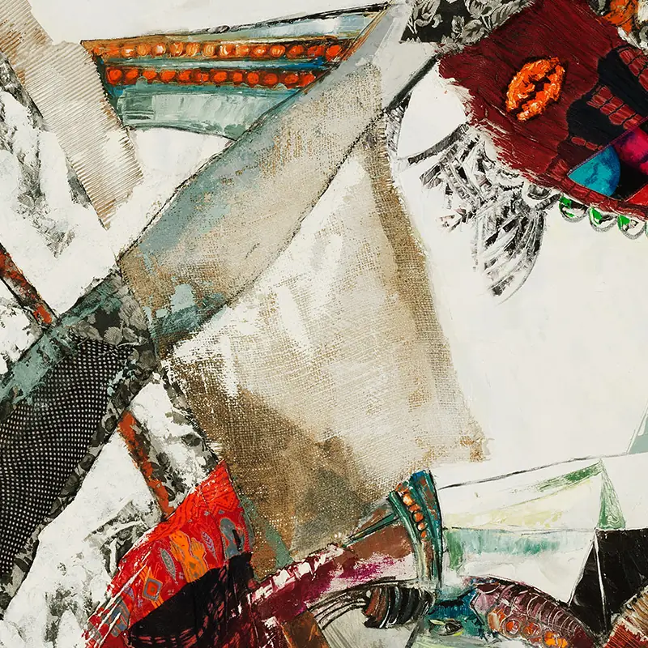

Elleguás hager II
- Year
- 2021
Elleguás hager II, 2021: a work by the Cuban-Norwegian painter Ramón Eduardo Haití Filiu.
Enquire about this workElleguás hager II, 2021: a work by the Cuban-Norwegian painter Ramón Eduardo Haití Filiu.
Enquire about this workDetailAn 800-pixel crop from the original photograph, at full resolution.
